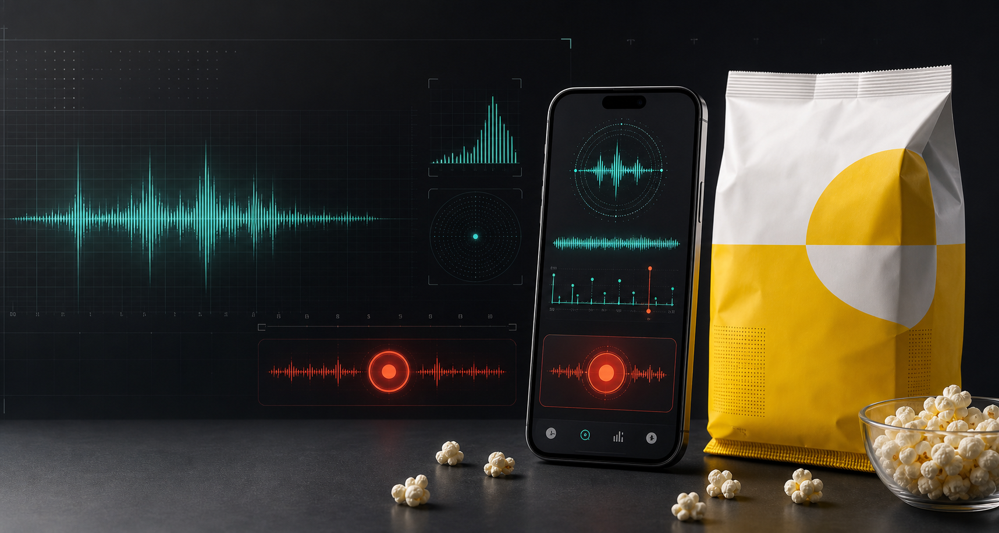

Concept 01 / Command Center
Popcorn timing has entered operations.
Roadmap microwave bags work with an app that listens to the pops, detects the slowdown, and alerts you when to stop the microwave.

Listen
The app tracks pop rhythm.
Predict
The slowdown becomes the signal.
Alert
You stop the microwave.
Proof angle
Roadmap automates the instruction people already miss.
Popcorn guidance already tells people to listen and stop when popping slows. Roadmap moves that task from human attention to app alert. A rare productivity win for a bag of corn.